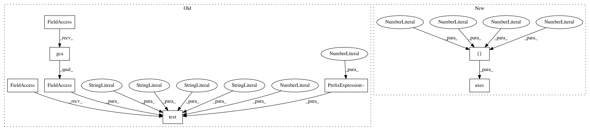

6d87b5fa03420a908fbf7e72868307dd6bc3223f,intro/matplotlib/examples/plot_polar.py,,,#,12
Before Change
plt.gca().set_yticklabels([])
plt.text(-0.2, 1.02, " Polar Axis \n",
horizontalalignment="left",
verticalalignment="top",
size="xx-large",
bbox=dict(facecolor="white", alpha=1.0),
transform=plt.gca().transAxes)
plt.text(-0.2, 1.01, "\n\n Plot anything using polar axis ",
horizontalalignment="left",
verticalalignment="top",
After Change
import numpy as np
import matplotlib.pyplot as plt
ax = plt.axes([0.025, 0.025, 0.95, 0.95], polar=True)
N = 20
theta = np.arange(0.0, 2 * np.pi, 2 * np.pi / N)
radii = 10 * np.random.rand(N)
In pattern: SUPERPATTERN
Frequency: 5
Non-data size: 8
Instances
Project Name: scipy-lectures/scipy-lecture-notes
Commit Name: 6d87b5fa03420a908fbf7e72868307dd6bc3223f
Time: 2016-09-15
Author: gael.varoquaux@normalesup.org
File Name: intro/matplotlib/examples/plot_polar.py
Class Name:
Method Name:
Project Name: scipy-lectures/scipy-lecture-notes
Commit Name: 6d87b5fa03420a908fbf7e72868307dd6bc3223f
Time: 2016-09-15
Author: gael.varoquaux@normalesup.org
File Name: intro/matplotlib/examples/plot_quiver.py
Class Name:
Method Name:
Project Name: scipy-lectures/scipy-lecture-notes
Commit Name: 6d87b5fa03420a908fbf7e72868307dd6bc3223f
Time: 2016-09-15
Author: gael.varoquaux@normalesup.org
File Name: intro/matplotlib/examples/plot_scatter.py
Class Name:
Method Name:
Project Name: scipy-lectures/scipy-lecture-notes
Commit Name: 6d87b5fa03420a908fbf7e72868307dd6bc3223f
Time: 2016-09-15
Author: gael.varoquaux@normalesup.org
File Name: intro/matplotlib/examples/plot_contour.py
Class Name:
Method Name:
Project Name: scipy-lectures/scipy-lecture-notes
Commit Name: 6d87b5fa03420a908fbf7e72868307dd6bc3223f
Time: 2016-09-15
Author: gael.varoquaux@normalesup.org
File Name: intro/matplotlib/examples/plot_text.py
Class Name:
Method Name: